CTF Challenges & Vulnerable Environments
See also our dedicated CTFs page with the full Wiz Cloud Security Championship calendar and CTFs grouped by cloud provider.

OWASP EKS Goat
Intentionally vulnerable AWS EKS environment with 20+ attack-defense labs simulating real-world misconfigurations, IAM flaws, and pod breakout paths.

Kubernetes Goat
Interactive Kubernetes security learning platform with guided workbook for GKE, EKS, AKS, or K3S. Deploy in your own cloud account.

Kubecon NA 2019 CTF
GCP-based CTF with guided workbook covering two attack and defense scenarios plus bonus challenges.

OWASP Wrong Secrets
Hands-on vulnerable application teaching secrets management anti-patterns and best practices.

CloudGoat
Deliberately vulnerable AWS deployment tool for learning cloud penetration testing. Create scenarios in your own AWS account.
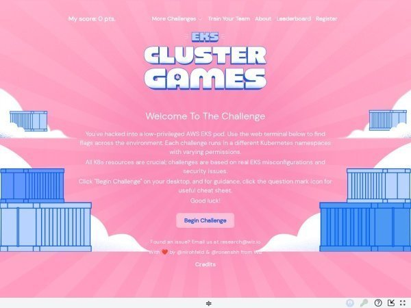
Wiz EKS Cluster Games
Vulnerable EKS pod with flag challenges across environment, includes leaderboard and requires registration.

Wiz Big IAM Challenge
CTF focused on AWS IAM privilege escalation and permission boundaries.
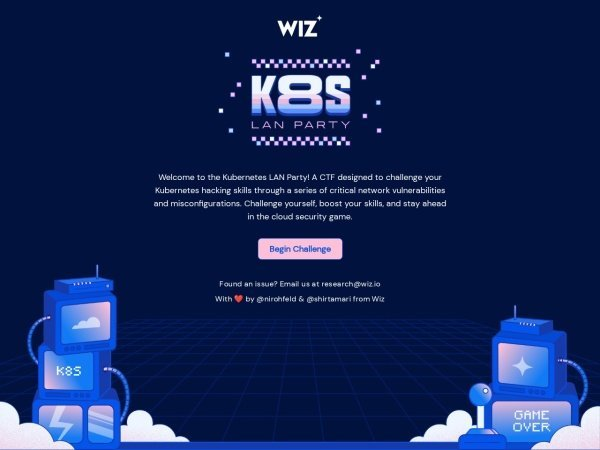
Wiz K8s LAN Party
Network of misconfigurations and vulnerabilities in Kubernetes cluster with leaderboard.
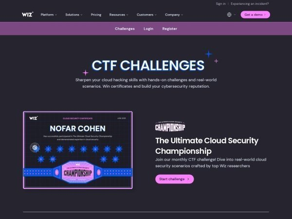
Wiz CTF Portal
Central hub for all Wiz CTF challenges and competition. Explore various cloud security challenges with leaderboards and prizes.
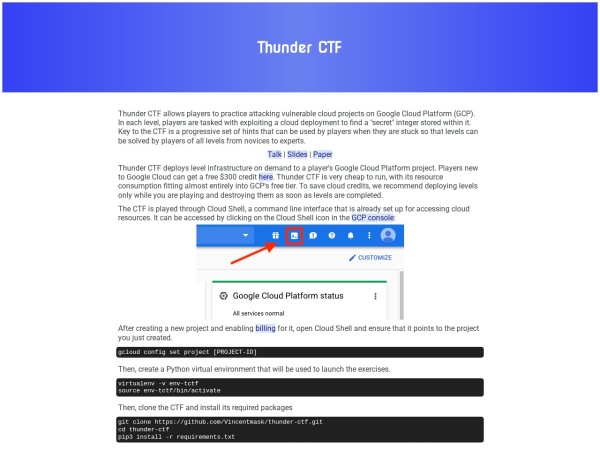
Thunder CTF
GCP-focused CTF challenges covering various cloud security scenarios.

IAM Vulnerable
AWS IAM privilege escalation playground with 31 different attack paths. Deploy with Terraform.

CloudFoxable
Deploy vulnerable AWS scenarios using Terraform. Companion to CloudFox enumeration tool.

BadZure
Deliberately vulnerable Azure infrastructure for testing and learning.

AIGoat
Deliberately vulnerable AI infrastructure from Orca Research for learning AI security.

CNAPPGoat
Multi-cloud vulnerable environment for testing CNAPP capabilities.

CICDont
Deliberately vulnerable CI/CD environment for learning pipeline security.

Bust a Kube
Vulnerable K8S cluster VMs for local VMWare environment.

Kube Security Lab
Local Kubernetes security testing environment with 14 vulnerable clusters using Docker, Ansible, and Kind.

Blue Team Labs
Defensive security scenarios and detection engineering challenges.

flaws.cloud
The classic AWS CTF by Scott Piper. Six progressive challenges covering S3, IAM, and metadata service misconfigurations - hosted live, no AWS account needed.

flaws2.cloud
Sequel to flaws.cloud with both attacker and defender tracks. Practice AWS incident response with CloudTrail and GuardDuty alongside offensive scenarios.

TerraGoat
Bridgecrew's vulnerable-by-design Terraform repo with multi-cloud misconfigurations. Ideal target for testing IaC scanners and DevSecOps pipelines.
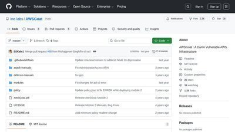
AWSGoat
INE Labs' modern AWS vulnerable environment with serverless and container attack chains. Terraform-deployable with detailed walkthroughs.

AzureGoat
Vulnerable-by-design Azure environment covering Functions, App Services, and Storage misconfigurations with Azure-specific privilege escalation paths.

GCPGoat
Vulnerable-by-design GCP environment covering Cloud Functions, Storage, and IAM misconfigurations. Completes the INE Labs Goat trilogy alongside AWS and Azure.
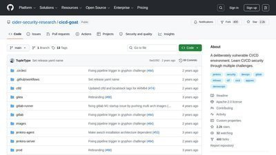
CICD Goat
Vulnerable CI/CD environment with 11 challenges across Jenkins, GitLab, and GitHub Actions. Maps to the OWASP Top 10 CI/CD Security Risks.

sadcloud
NCC Group's Terraform project that spins up an AWS account full of intentional misconfigurations. Practice target for CSPM tools and detection engineering.

OWASP ServerlessGoat
OWASP's vulnerable AWS Lambda application teaching serverless-specific attacks like event injection and over-privileged functions. Maps to the Serverless Top 10.
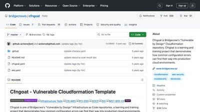
CfnGoat
Bridgecrew's vulnerable-by-design CloudFormation templates. Practice target for IaC scanners like Checkov - learn to write and validate custom policies.
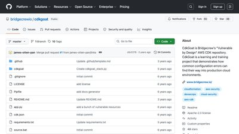
CDKGoat
Bridgecrew's intentionally insecure AWS CDK project. Helps CDK developers see what IaC scanners catch in synthesized CloudFormation before they ship.
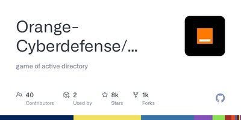
GOAD - Game of Active Directory
Pre-built vulnerable Active Directory lab with misconfigured trusts, Kerberos abuse paths, and AD CS flaws. The standard environment for learning hybrid identity attacks.
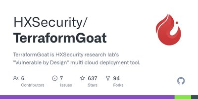
TerraformGoat
Vulnerable multi-cloud Terraform modules covering AWS, GCP, Azure, and Alibaba Cloud misconfigurations. Self-contained scenarios you can apply, exploit, and destroy.
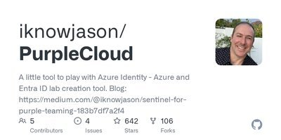
PurpleCloud
Terraform-driven Entra ID attack/defense lab. Provisions vulnerable tenants and hybrid joins with Microsoft Sentinel logging pre-wired for purple-team exercises.
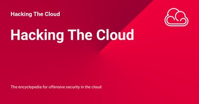
Hacking the Cloud
Open-source encyclopedia of cloud offensive tradecraft for AWS, Azure, GCP, and Kubernetes. Maps techniques to working PoC commands with research citations.
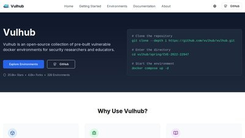
Vulhub
Pre-built Docker Compose environments reproducing hundreds of real CVEs. Spin up Log4Shell, Spring4Shell, and container escapes in seconds for hands-on practice.
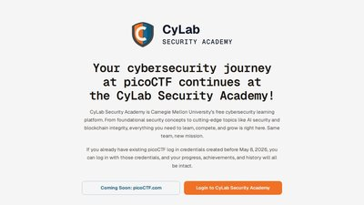
picoCTF
Carnegie Mellon CyLab's free CTF platform with archived problems and a self-paced picoGym. A common on-ramp before tackling cloud-specific challenges.
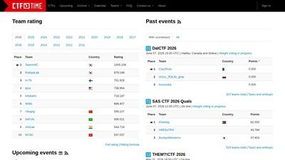
CTFtime
Central calendar and rating site for CTF competitions worldwide, with writeup archives, team rankings, and links to active events.
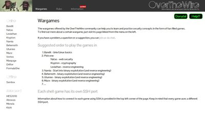
OverTheWire Wargames
SSH-based wargames teaching shell, networking, and crypto fundamentals. Bandit is the standard on-ramp before cloud and container CTFs.
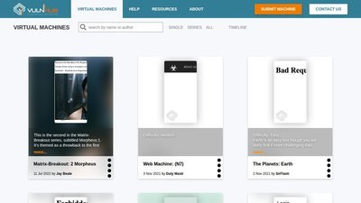
VulnHub
Archive of downloadable vulnerable VMs for boot2root, web, and Active Directory practice. Runs offline in VirtualBox - no cloud credits required.

flAWS Challenge
Scott Piper's classic six-level AWS CTF teaching real-world S3, IAM, and Lambda misconfigurations. Free, no registration, no AWS account required.

flAWS 2
Sequel to flAWS with parallel attacker and defender tracks across ECS, IAM chaining, and CloudTrail forensics.
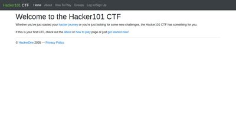
Hacker101 CTF
HackerOne's free browser-based CTF covering web, API, and auth challenges. Captured flags can unlock private bug bounty invites.

OWASP Juice Shop
Intentionally vulnerable web app covering the OWASP Top 10 and modern issues like JWT flaws and SSRF. Built-in scoreboard and CTF export for team events.

PortSwigger Web Security Academy
Free interactive labs on XSS, SSRF, deserialization, OAuth flaws, and more from the Burp Suite team. Browser-based with no setup.

Google CTF
Public archive of Google's annual CTF challenges with source, build steps, and official writeups. Spans web, crypto, pwn, RE, and cloud scenarios.

240+ links, vendor-neutral, no affiliate codes - curated by the community for the community. - what this catalog is and isn’t
Hands-On Labs & Training Platforms
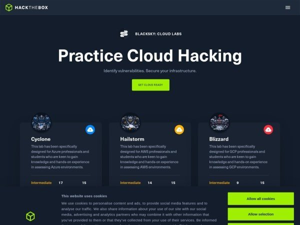
Hack The Box BlackSky
Cloud security specialist labs for AWS, Azure, and GCP with realistic enterprise infrastructure. Earn Cloud Security Specialist certifications.
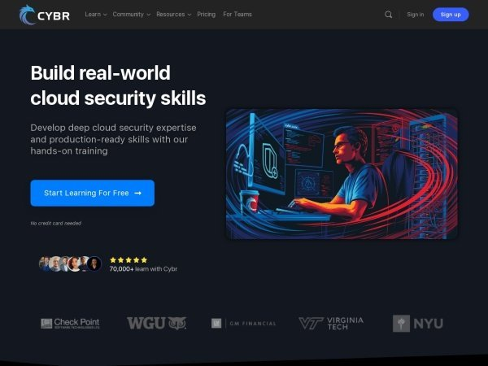
Cybr Free AWS Labs
Free 1-click deploy hands-on AWS security labs for building practical skills risk-free.

Digital Cloud Training Challenge Labs
1000+ scenario-based labs for AWS and Azure with automatic validation, scoring, and multiple difficulty levels.

AWS Well-Architected Security Labs
Hands-on labs and documentation for building secure workloads using AWS Well-Architected Framework.

Awesome CloudSec Labs
Curated collection of free cloud native security learning labs including CTF, workshops, and research labs.
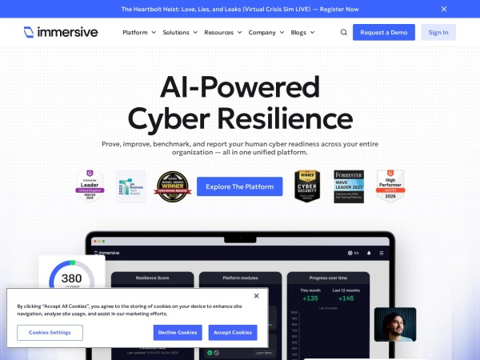
Immersive Labs
Cyber drills, labs, and reporting mapped to MITRE ATT&CK, NICE, and NIST frameworks for measuring team readiness.

SecureFlag GCP Labs
Hands-on GCP security training covering IAM, network security, encryption, and API security.
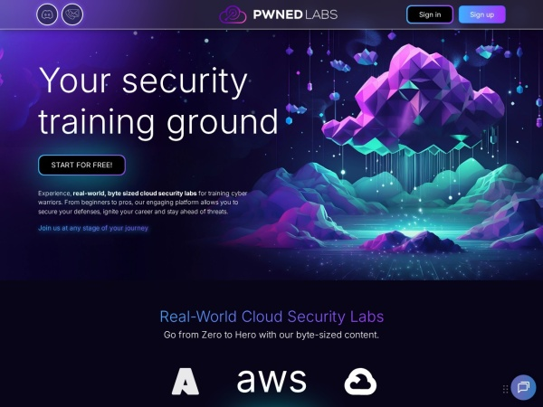
Pwned Labs
Premium Azure and AWS security labs with assume-breach scenarios and professional certifications.
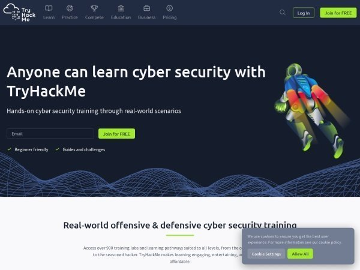
TryHackMe
Gamified cybersecurity training with cloud security learning paths and 800+ labs.

A Cloud Guru
Comprehensive cloud training platform with AWS, Azure, and GCP security courses.
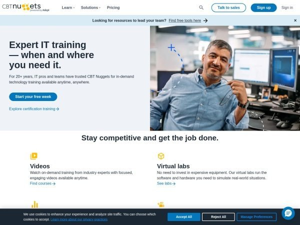
CBT Nuggets
IT training platform with cloud security certification prep courses.

Udemy Courses
Wide selection of cloud security courses from various instructors.
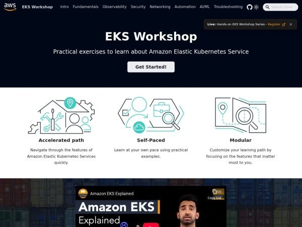
Amazon EKS Workshop
Hands-on workshop for learning Amazon EKS including security best practices.

The Homelab Almanac
Comprehensive guide for building your own security home lab with infrastructure-as-code examples and practical setups.
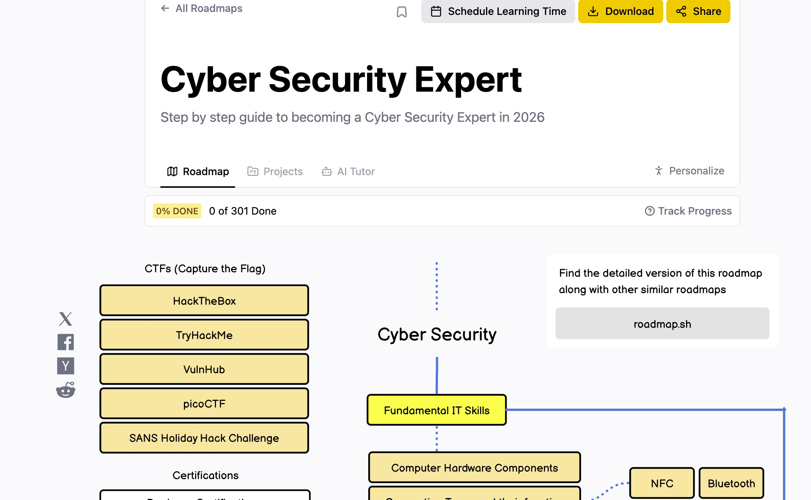
Cybersecurity Expert Roadmap
Structured learning path for cloud security expertise with recommended skills, tools, and resources for different career levels.
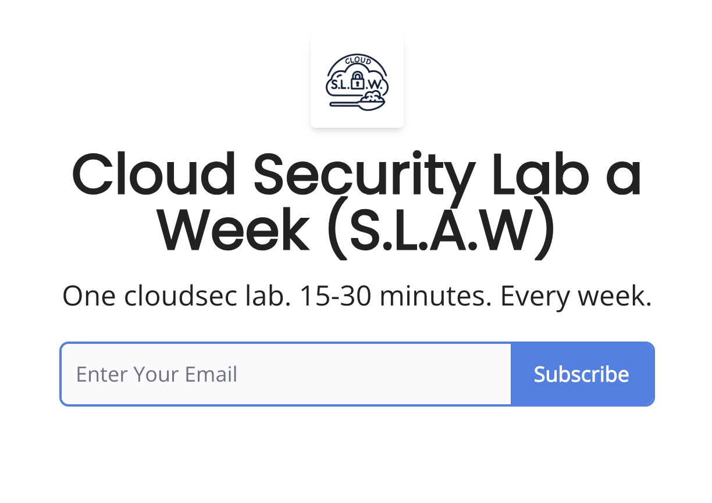
SLAW: Security Lab a Week
Hands-on cloud security labs from Securosis with 15-30 minute exercises focusing on practical cloud security scenarios.

Microsoft Learn - Azure Security
Free official Microsoft training with browser-based sandboxes for hands-on Azure security practice. Maps directly to AZ-500 and SC-100 certification paths.

Google Cloud Skills Boost - Security
Hands-on GCP security learning path with temporary cloud environments provided. Covers IAM, VPC Service Controls, and Security Command Center.

AttackIQ Academy
Free training on threat-informed defense, MITRE ATT&CK, purple teaming, and adversary emulation. CPE credits awarded for completion.

Antisyphon Training
Pay-what-you-can security training from John Strand and Black Hills InfoSec. Live virtual classes with practitioner instructors and active Discord support.

Hack The Box Academy
Structured courses with integrated labs and job-role paths. Earn industry-recognized certifications like CBBH and CPTS through hands-on practice.

AWS Skill Builder
AWS's official training portal with free courses, security learning plans, and sandboxed hands-on labs. Curated by AWS engineers and aligned to certification objectives.

Killercoda
Browser-based interactive Kubernetes and cloud-native scenarios from the CKS simulator team. Free, no signup for most labs - popular for CKS exam prep.

AWS Workshops Catalog
Official self-paced workshops by AWS architects covering IAM, GuardDuty, Security Hub, Detective, and incident response with deploy scripts and walkthroughs.

Google Cloud Skills Boost
Google's official labs platform (formerly Qwiklabs) with self-paced GCP environments. Security paths cover IAM, VPC Service Controls, BeyondCorp, and PCSE cert prep.

Cloud Resume Challenge
Forrest Brazeal's project-based challenge spanning IaC, CI/CD, serverless, and identity. Builds a real portfolio piece that exercises end-to-end cloud security thinking.
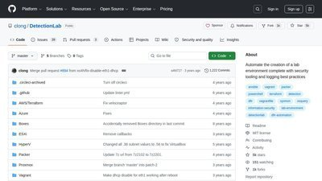
DetectionLab
Chris Long's curated Windows detection-engineering lab with AD, ELK, Velociraptor, and Splunk pre-wired. The reference project for tuning Sigma rules and tracing attacks.
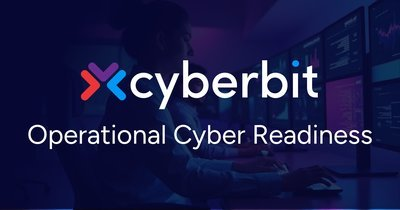
RangeForce Community Edition
Browser-based hands-on training with cloud, container, and SOC modules. Free community tier runs in sandboxed environments with no setup.
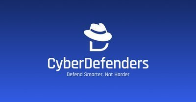
CyberDefenders
Blue-team labs covering DFIR, incident response, and cloud log analysis. Free tier covers most challenges; paid tier adds structured career paths.
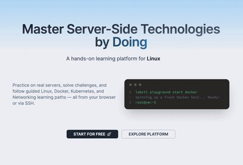
Iximiuz Labs
Free interactive Linux, container, and Kubernetes labs by Ivan Velichko. Each lab gives you a real terminal environment with guided exercises.
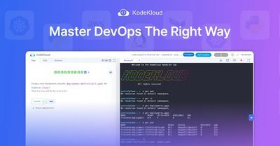
KodeKloud
Browser-based labs and courses for Kubernetes, Docker, Terraform, and DevSecOps. Popular CKA/CKAD/CKS prep with hands-on exam-style practice tests.
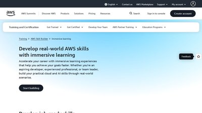
AWS Cloud Quest
AWS's free 3D role-playing game that teaches services through guided quests, including a Security path covering IAM, GuardDuty, KMS, and incident response.
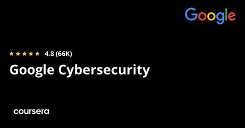
Google Cybersecurity Certificate
Google's eight-course Coursera certificate covering frameworks, networks, Linux/SQL, Python automation, and incident response. Free to audit, paid for the credential.
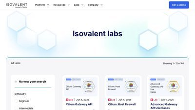
Isovalent Labs
Free hosted labs covering Cilium, eBPF, Kubernetes network policy, and Tetragon runtime security. Runs in a sandbox - no cluster required.
HashiCorp Developer Tutorials
Official HashiCorp tutorials for Terraform, Vault, Consul, and Boundary - including secrets rotation, dynamic credentials, and policy-as-code.

SANS Cyber Aces Online
Free foundational SANS tutorials covering operating systems, networking, and system administration - the baseline before any paid GIAC track.
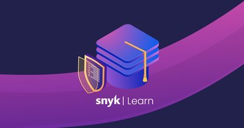
Snyk Learn
Free interactive lessons on appsec, IaC, container, and supply chain security with browser-based exploit-then-patch sandboxes.
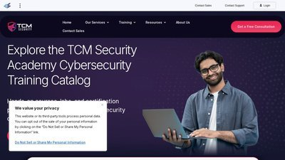
TCM Security Academy
Affordable practical pentesting and Active Directory courses from The Cyber Mentor. Pairs with the PNPT certification.
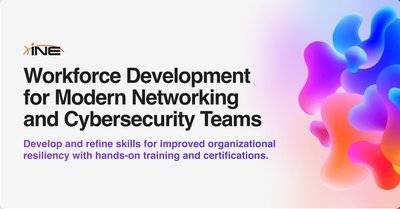
INE
Hands-on labs and learning paths across cloud, security, and networking. Home of the eJPT and eCPPT pentest certifications.

AppSecEngineer
Hands-on cloud-native and DevSecOps training spanning AWS, Azure, GCP, Kubernetes, and secure coding. Browser-based labs aligned to security engineer roles.

OpenSecurityTraining2
Free university-grade courses on x86/ARM internals, reverse engineering, and vulnerability research. Rounds out the depth missing from cloud-only curricula.

Practical DevSecOps
Browser-lab training and certifications for CI/CD security, container and Kubernetes hardening, IaC scanning, and SBOM workflows.
Security Tools & Platforms

AccuKnox CNAPP
Zero Trust CNAPP with integrated CSPM, CWPP, KSPM, ASPM. Features runtime protection via KubeArmor with eBPF/LSM and inline mitigation.

Wiz CNAPP
Agentless CNAPP with security graph technology for visualizing attack paths across AWS, Azure, GCP, OCI, and Alibaba Cloud.
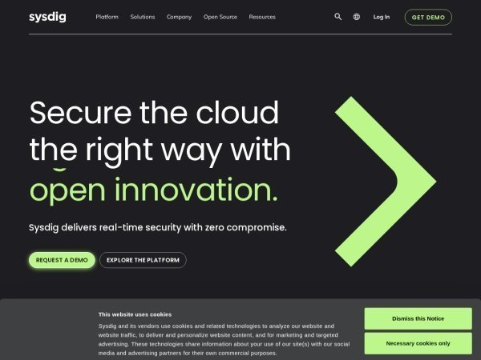
Sysdig Secure
CNAPP leveraging open-source Sysdig and Falco for deep runtime threat detection with eBPF monitoring.

Orca Security
Agentless CNAPP with side-scanning technology and attack path analysis showing real-world exploitation scenarios.
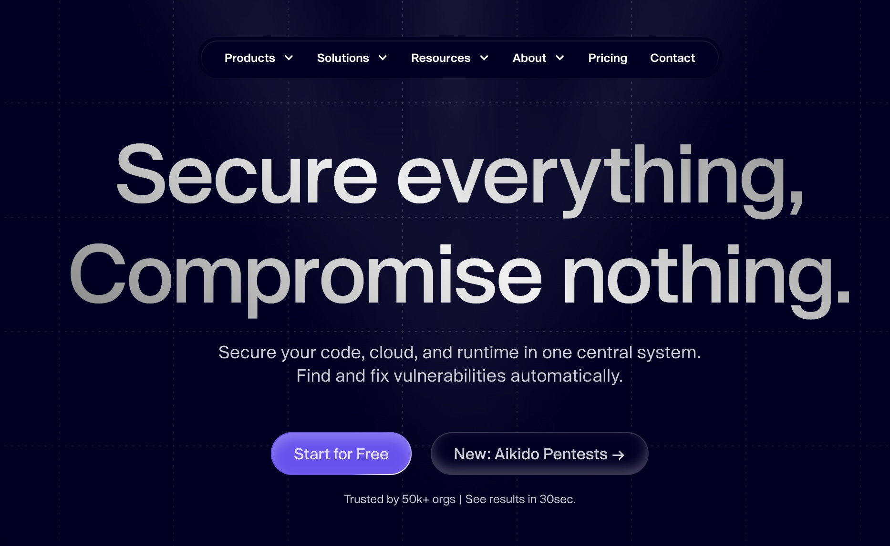
Aikido Security
Unified code-to-cloud platform combining CSPM, CWPP, SAST, SCA. Traces issues from runtime back to IaC source code.

Fidelis Security Halo
CNAPP with patented 2MB microagent technology for Windows/Linux with self-installing capabilities.
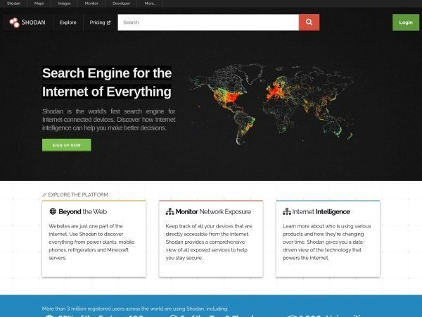
Shodan
Search engine for Internet-connected devices. Essential for cloud asset discovery and reconnaissance.

ZoomEye
Cyberspace search engine for discovering exposed services and devices.

Censys
Internet scanning and attack surface management platform.
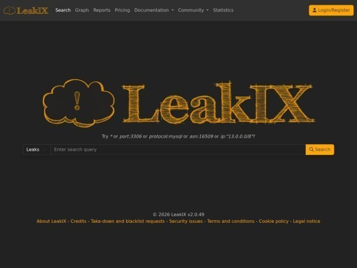
LeakIX
Search engine for exposed data and misconfigurations.

DNSDumpster
DNS reconnaissance and research tool for discovering domain assets.
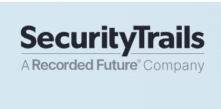
Security Trails
DNS and domain intelligence for attack surface discovery.

grep.app
Search across 500K+ GitHub repositories for code, credentials, and configurations.
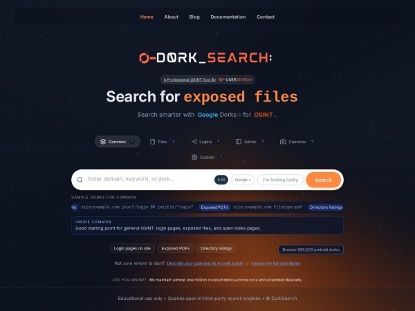
Dorksearch
Google dork search tool for finding exposed information.
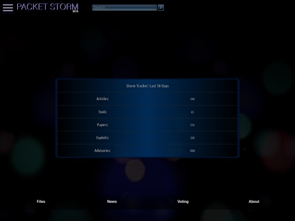
Packet Storm
Information security news, files, and exploits database.
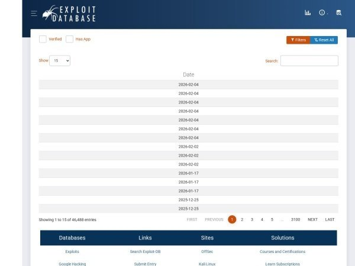
Exploit-DB
Archive of public exploits and vulnerable software.
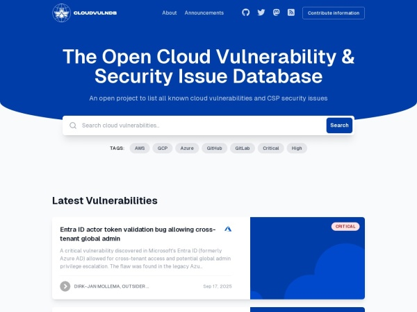
CloudVulnDB
Open-source database of cloud security vulnerabilities.
isotope¹³ Supply-Chain Attack Compendium
Research database of supply-chain attacks from 1975 to 2026, indexed by year, vector, and payload insertion point.

OWASP
Open Web Application Security Project with cloud security resources.

Cloud Katana
Cloud adversary emulation tool for testing detection capabilities.

ScoutSuite
Multi-cloud security auditing tool for AWS, Azure, GCP, and more.
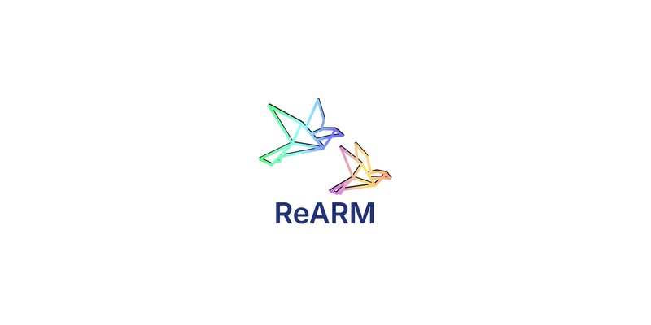
ReARM
ReARM - Release-Level Supply Chain Evidence Platform. ReARM stores and manages SBOMs, xBOMs, SAST / DAST scan results, Attestations, and other Security Artifacts.

Saner CNAPP
Revolutionary CNAPP integrating CSPM, CIEM, CWPP with AI-driven monitoring and automated remediation.

Datadog Cloud Security
Real-time threat detection with compliance automation for DevSecOps workflows.
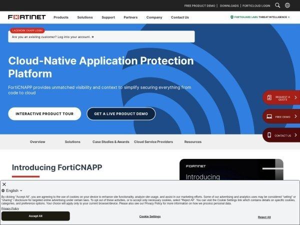
FortiCNAPP (formerly Lacework)
AI-powered CNAPP with ML anomaly detection and automated threat response. Formerly Lacework Polygraph.

SentinelOne Cloud
AI-powered threat detection for cloud workloads with runtime protection.
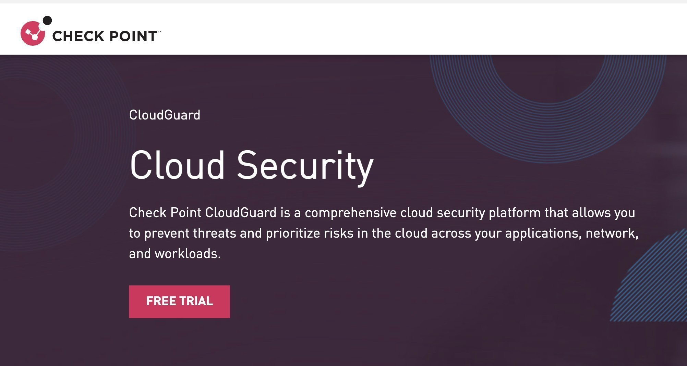
Check Point CloudGuard
Unified security across applications, networks, and workloads with AI-driven threat prevention.
CrowdStrike Falcon Cloud
Identity-centric cloud security with continuous monitoring and least-privilege enforcement.
Palo Alto Prisma Cloud
Comprehensive CNAPP with end-to-end security from code to cloud.
Prowler
Leading open-source multi-cloud security assessment tool. 500+ checks across AWS, Azure, GCP, and Kubernetes mapped to CIS, PCI-DSS, and HIPAA.

Steampipe
Query cloud APIs with SQL. 140+ plugins for AWS, Azure, GCP, Kubernetes, and SaaS - ideal for asset inventory and ad-hoc security investigations.

Checkov
Open-source IaC scanner for Terraform, CloudFormation, Kubernetes, Helm, and Dockerfiles. 1,000+ built-in policies and custom Python or YAML rules.

Trivy
Aqua's all-in-one open-source scanner. CVEs, misconfigurations, secrets, and SBOMs across containers, IaC, and Kubernetes - the de facto standard for image scanning.
Kubescape
CNCF-hosted Kubernetes security platform. Scans clusters and IaC against NSA-CISA, MITRE ATT&CK, and CIS Kubernetes frameworks with remediation guidance.

Falco
CNCF graduated runtime security engine using eBPF to detect anomalous container, host, and Kubernetes activity. The reference project behind many CNAPP runtime modules.

CloudFox
Bishop Fox's offensive cloud enumeration CLI. Surfaces AWS and Azure attack paths, exposed services, IAM trust relationships, and secrets in user data.
gitleaks
Fast open-source secret scanner for git history, commits, and files. Runs locally, in pre-commit hooks, or as a GitHub Action to catch credentials before they ship.
Pacu
Rhino Security Labs' open-source AWS exploitation framework. 80+ modules for enumeration, privilege escalation, and persistence - the standard tool for offensive cloud testing.

Cloud Custodian
Capital One's open-source policy-as-code engine for AWS, Azure, and GCP. Write YAML rules that detect and auto-remediate misconfigurations across cloud estates.

Stratus Red Team
Datadog's open-source cloud attack emulation framework mapped to MITRE ATT&CK. Detonates safe attack scenarios across AWS, Azure, GCP, and K8s to validate detections.
Cilium
CNCF graduated eBPF networking and security platform for Kubernetes. Provides L3-L7 network policies, transparent encryption, and Hubble flow observability.
Open Policy Agent (OPA)
CNCF graduated policy engine using the Rego language. Unified policy-as-code across Kubernetes admission, Terraform, Envoy, and microservice APIs.
Semgrep
Lightweight SAST tool with pattern-matching rules covering secrets, insecure SDK usage, and IaC misconfigurations. Free CLI and OSS rules; commercial tier adds a platform.
Kyverno
CNCF Kubernetes policy engine using YAML rules. Validates, mutates, and generates resources at admission and audits existing clusters - no dedicated policy language.

Sigstore
OpenSSF keyless signing for container images and SBOMs via short-lived OIDC certs and a transparency log. Adopted by Kubernetes, npm, PyPI, and major registries.
TruffleHog
Open-source secret scanner that verifies leaked credentials by calling the upstream API, across git, S3, Docker, Slack, Jira, and more. Cuts false-positive triage sharply.
OpenSSF Scorecard
OpenSSF tool that scores repos on branch protection, signed releases, dependency hygiene, and known vulnerabilities. Used to set minimum bars on open-source dependencies.
KICS by Checkmarx
Open-source IaC scanner with 2,400+ queries for Terraform, CloudFormation, Kubernetes, Helm, Docker, and Ansible. Built for fast CI gates.
Grype
Open-source vulnerability scanner for container images and filesystems from Anchore. Pulls NVD, GHSA, and distro feeds; pairs with Syft for SBOMs.
CISA ScubaGear
ScubaGear is an assessment tool that verifies that a Microsoft 365 tenant's configuration conforms to the policies described in the SCuBA Secure Configuration Baseline documents, covering Entra ID, Exchange, Teams, SharePoint, OneDrive, Defender, and Power Platform.
Syft
Open-source SBOM generator for container images and filesystems. Outputs SPDX and CycloneDX; pairs with Grype for downstream scanning.
CloudQuery
Open-source cloud asset inventory that syncs config from AWS, Azure, GCP, and Kubernetes into SQL for plain-query posture checks.
OWASP ZAP
Flagship open-source DAST proxy for active scanning, fuzzing, and intercepting web app traffic. Ships with CI automation and a REST API.

OSV-Scanner
Google's open-source scanner backed by OSV.dev. Runs against lockfiles, SBOMs, and container images across npm, PyPI, Go, Maven, and Linux distros.

MITRE Caldera
Open-source adversary emulation platform built on ATT&CK. Scripts multi-stage attack chains for detection benchmarking and purple-team exercises.

kube-bench
Open-source CIS Kubernetes Benchmark checker from Aqua Security. Runs as a Job with specific checks for EKS, GKE, AKS, and RKE clusters.
Certifications & Professional Development
CKS Certification
Certified Kubernetes Security Specialist from CNCF. Hands-on certification proving command-line proficiency in securing production K8s workloads.

Pwned Labs Professional Bootcamps
Cloud attack & defense bootcamps for AWS (ACRTP), Azure/M365 (MCRTP), and GCP (GCRTP) with professional certifications.
CSA Cloud Threat Modeling
Training on top 11 cloud threats, threat modeling techniques, and risk treatment methods.
AWS Certified Cloud Practitioner
Foundational AWS certification covering cloud concepts and basic security.

AWS Solutions Architect Associate (SAA-C03)
Associate-level AWS certification with security design principles.

AWS Solutions Architect Professional
Professional-level AWS certification including advanced security architectures.
Security Certification Roadmap
Comprehensive visual guide to cybersecurity certifications and career paths.
ISC2 CCSP 2025
Updated Certified Cloud Security Professional with new domains: zero trust, DevSecOps, cloud-native security.
CKS: Kubernetes Security
Certified Kubernetes Security Specialist with hands-on labs for cluster and system hardening.

CSA CCSK v5
Updated Certificate of Cloud Security Knowledge v5 covering latest cloud security domains.

GIAC GCSA & GCLD
Cloud Security Automation (GCSA) and Cloud Data (GCLD) focusing on automation and data security.
CompTIA Cloud+ 2025
Updated Cloud+ covering cloud security implementation across hybrid environments.
Security Blue Team
Blue team certification platform providing hands-on training and credentials for defensive security practitioners.

WiCyS Mentorship Program
Structured annual mentorship program pairing members with experienced cybersecurity professionals for leadership development, career guidance, and networking.

ISACA Mentorship Program
Global one-to-one mentorship program for professionals at all career stages in IT audit, cybersecurity, and governance. Mentors and mentees earn CPE hours.
Cyversity
Nonprofit offering structured mentorship pairing new and established cybersecurity professionals for personalized career guidance, skills development, and networking.

CyberSecurity Mentoring Hub
Global mentor/mentee program with presentation sessions, networking events, and curated resources for cybersecurity career development.

MentorCruise - Cybersecurity
One-on-one mentoring marketplace with vetted cybersecurity professionals offering long-term mentorship on cloud security, pentesting, and career strategy.

ISSA International
Global nonprofit with local chapters providing educational forums, publications, peer networking, and chapter-level mentorship for security professionals.

Cloud Security Alliance Community
Leading cloud security organization with 80,000+ members, local chapter events, research working groups, and an exclusive online networking community.

Lateral Connect Mentoring
Group mentorship program where small cohorts work under seasoned cybersecurity professionals, fostering collaborative learning and hands-on experience.
Blacks In Cybersecurity
Mentoring program helping mentees develop technical skills, define career goals, and build their professional brand in cybersecurity.

MassCyberCenter Mentorship
State-sponsored program connecting diverse undergraduate students with cybersecurity industry professionals for career exploration and network development.
OWASP Community
Nonprofit with 250+ local chapters hosting meetups, workshops, and conferences for application security networking and community-driven knowledge sharing.

See Yourself in Cyber
National Cybersecurity Alliance initiative helping students launch security careers through campus events, workshops, scholarships, and mentorship connections.
InfraGard
FBI-private sector partnership with local chapters for cybersecurity and critical infrastructure professionals to share intelligence and build professional relationships.
Leland - Cybersecurity Mentors
Mentoring platform connecting users with top-rated cybersecurity mentors for one-on-one coaching on career transitions, certifications, and professional development.

The Triangle Net
Cybersecurity community connecting aspiring and junior security professionals with mentorship opportunities, internships, and career resources.

AWS Certified Security - Specialty (SCS-C03)
AWS's flagship security cert covering threat detection, IAM, infrastructure security, data protection, and incident response. Strong signal for senior AWS security roles.

Microsoft AZ-500: Azure Security Engineer Associate
Microsoft's flagship Azure security cert covering identity, platform protection, security operations, and data security. A natural stepping stone to SC-100.

Google Professional Cloud Security Engineer
Google's premier security cert covering IAM, VPC Service Controls, Cloud KMS, and Security Command Center. Practical, implementation-focused exam content.

Microsoft SC-100: Cybersecurity Architect Expert
Microsoft's expert-level certification for security architects. Covers Zero Trust, GRC, and end-to-end design across Microsoft 365 and Azure.

CompTIA Security+ (SY0-701)
The most widely-recognized entry-level security cert. Vendor-neutral, DoD 8570 approved, and often the first step on a cloud security career path.

ISC2 CISSP
ISC2's flagship certification and the most-requested credential in senior security job postings. Eight domains spanning architecture, IAM, and risk management.

Microsoft SC-200: Security Operations Analyst
Microsoft's associate-level SOC certification covering Sentinel, Defender XDR, and KQL hunting. A natural next step after AZ-500 for blue teamers.

CompTIA CySA+ (CS0-003)
Vendor-neutral mid-level cert for SOC analysts and threat hunters. DoD 8570 approved and focused on detection, vulnerability management, and incident response.
KCSA - Kubernetes & Cloud Native Security Associate
CNCF's entry-level K8s security cert. Multiple-choice exam covering cloud-native threat model, platform security, and compliance - a stepping stone to CKS.
OSCP (PEN-200)
OffSec's flagship hands-on pentesting cert. 24-hour practical exam covering AD, web, and privilege escalation - the most recognized credential for offensive engineers.
GIAC GPCS - Public Cloud Security
GIAC's vendor-neutral cloud security cert spanning AWS, Azure, and M365. Pairs with SANS SEC510 - a strong choice for multi-cloud practitioners wanting breadth.
GIAC GCPN - Cloud Penetration Tester
GIAC's offensive cloud security cert paired with SANS SEC588. Covers cloud-native enumeration, container escapes, serverless abuse, and CI/CD pipeline attacks.
CSA CCZT - Certificate of Competence in Zero Trust
CSA's vendor-neutral Zero Trust credential covering NIST SP 800-207, CISA's ZT Maturity Model, and Forrester ZTX. Self-paced study materials included with the exam.
HashiCorp Vault Associate
Entry-level certification covering Vault deployment, secrets engines, authentication, and policies. Signals practical competence with the leading cloud-native secrets platform.
HashiCorp Terraform Associate
Associate cert covering Terraform basics, state, providers, and modules. Signals fluency with the dominant IaC tool behind landing zones and policy-as-code pipelines.
CKA - Certified Kubernetes Administrator
Two-hour hands-on exam operating a real cluster - troubleshooting, networking, storage, workloads. The operational prerequisite for CKS and the foundation for K8s security work.
ISACA CCAK - Cloud Auditing Knowledge
ISACA/CSA joint credential for auditing cloud controls against CCM, STAR, ISO 27001, and NIST. Pairs naturally with CCSK for GRC and audit-focused roles.
(ISC)² Certified in Cybersecurity (CC)
(ISC)²'s entry-level cert covering security principles, access control, networking, and ops. Free exam and training through the One Million initiative.
CompTIA PenTest+
Performance-based pentest cert covering cloud, on-prem, and IoT targets. DoD 8140/8570 approved; sits between Security+ and OSCP.

Microsoft SC-300 - Identity and Access Administrator
Microsoft cert focused on Entra ID identity design - conditional access, governance, hybrid, and external identities. Pairs with AZ-500.
ISC2 SSCP
Systems Security Certified Practitioner - the operations-focused counterpart to CISSP for hands-on engineers implementing controls.
GIAC GCIH
GIAC Certified Incident Handler from SANS - industry-standard credential for detection, containment, and recovery work.
Linux Foundation KCNA
Entry-level CNCF cert covering core Kubernetes concepts, cloud-native architecture, and observability. The friendly on-ramp before CKA or CKS.

TCM PNPT
Practical Network Penetration Tester - a five-day hands-on AD compromise exam with report and live debrief. Accessible alternative to OSCP.

OffSec OSWE
Advanced Web Attacks and Exploitation - a 48-hour white-box source-review exam focused on authentication-bypass chain development.

GIAC GSEC
Foundational SANS credential covering networking, crypto, incident handling, and cloud fundamentals. Vendor-neutral on-ramp before GCSA or GPCS.
AI Security & LLM Protection
Tumeryk
Cloud security testing and attack simulation platform. Test cloud infrastructure for security vulnerabilities through automated attacks and provide AI-powered recommendations.

Lakera Guard
Real-time LLM security platform detecting prompt injection, jailbreak attempts, and unsafe behavior with <50ms latency. Industry-leading protection backed by millions of attack data points.

NVIDIA Garak
Open-source LLM vulnerability scanner probing for hallucination, data leakage, prompt injection, toxicity, and jailbreaks. The nmap of AI security.
LLM Guard
Open-source security toolkit with advanced input/output scanners for data leakage prevention, prompt injection detection, and content moderation. 2.5M+ downloads.

Rebuff AI
Multi-layered prompt injection detection using heuristics, LLM-based detection, and canary tokens to identify and mitigate vulnerabilities.
CalypsoAI Moderator
Model-agnostic enterprise LLM security solution providing real-time scanning, alerts, and comprehensive risk identification at scale.

NeMo Guardrails
NVIDIA's Python toolkit for adding programmable guardrails to LLM conversational applications, ensuring responsible and ethical AI use.

Guardrails AI
Python package for specifying structure, type validation, and correcting LLM outputs with pre-built measures for various risks.
Giskard AI Security
Automated LLM security testing with heuristics-based and LLM-assisted detectors for domain-specific vulnerabilities in AI applications.

LLMFuzzer
Open-source fuzzing framework for LLMs focusing on API integrations with diverse fuzzing strategies to identify vulnerabilities.

Pynt LLM Security
Dynamic analysis and traffic inspection for LLM APIs, identifying prompt injection pathways and insecure output handling.

BurpGPT
Burp Suite extension integrating LLMs for AI-enhanced web security testing with vulnerability scanning and traffic analysis.
Lasso Security
End-to-end LLM security solution protecting against external threats and internal vulnerabilities with comprehensive threat modeling.
WhyLabs LLM Security
Multi-layered approach to LLM security with data loss prevention, prompt injection monitoring, and misinformation detection.
Protecto AI
High-precision LLM security evaluation with Privacy Vault for data encryption, anonymization, and secure model deployment.

Vigil
Alpha-stage prompt-level security scanner for high-volume environments requiring prompt validation without infrastructure overhaul.

OpenAI Aardvark
Agentic security researcher monitoring commits for vulnerabilities using LLM-powered reasoning to identify, explain, and fix security issues.

Microsoft PyRIT
Python Risk Identification Toolkit for red-teaming LLMs with structured approaches to adversarial testing.
Constitutional AI
Anthropic's framework for AI safety through constitutional principles, enabling models to self-correct and maintain alignment.

Alert AI Gateway
Zero-Trust AI Security Gateway with automatic vulnerability scanning across full development lifecycle.

DeepEval
LLM evaluation and guardrails framework with LLM-as-judge for data leakage, prompt injection, jailbreaking, bias, and toxicity detection.
Nexos.ai Platform
Unified AI governance platform with AI Gateway, AI Workspace, guardrails, and LLM observability for enterprise security.

Granica AI Crunch
AI data platform optimizing training data pipelines with security, privacy, and compliance controls for LLM development.

Mindgard AI
AI security posture management (AI-SPM) for continuous threat monitoring, risk scoring, and automated remediation.
DeepStrike AI Pentesting
AI-specific penetration testing services simulating adversarial attacks, model inversion, and memory poisoning.

Hugging Face Model Cards
Standardized model documentation framework for transparency, security evaluation, and risk assessment of AI models.

OWASP Top 10 for LLMs 2025
Definitive list of top 10 LLM security vulnerabilities including prompt injection, data poisoning, and excessive agency. Updated for 2025 with new threats.

OWASP Agentic AI Top 10 2026
Groundbreaking framework for autonomous AI systems released at Black Hat Europe 2025, covering agentic manipulation and tool poisoning.

Prompt Injection Guide
Comprehensive OWASP guide to prompt injection vulnerabilities, direct and indirect attacks, and mitigation strategies ranked #1 AI security risk.

CSA Guardrails Guide
Cloud Security Alliance's in-depth guide on building enterprise AI prompt guardrails with DLP integration, multilayered security, and compliance frameworks.
Bypassing LLM Guardrails Research
Academic research demonstrating character injection and AML evasion attacks achieving 100% bypass rates against commercial guardrails.
Wiz Research Blog
Wiz Research posts covering cloud security incidents, vulnerability analysis, and threat research write-ups.
LLM Security Guide
Comprehensive GitHub reference for securing LLMs covering OWASP Top 10, prompt injection, adversarial attacks, and mitigation strategies.
Datadog Guardrails Best Practices
Technical guide on implementing guardrails for LLM security covering input validation, prompt construction, and output filtering.
Lakera Prompt Injection Guide
Tactical guide to understanding, recognizing, and preventing prompt injection attacks with real-world examples and defense strategies.
Obsidian: Prompt Injection #1
Analysis of prompt injection as #1 AI exploit in 2025 appearing in 73% of production deployments with enterprise mitigation strategies.
Confident AI: Ultimate Guardrails Guide
Complete guide to LLM guardrails using LLM-as-judge for data leakage, prompt injection, jailbreaking, and bias detection.
Invicti: OWASP LLM Analysis
Business impact analysis of OWASP Top 10 LLM risks with technical testing methods and defense strategies.

Qualys: OWASP 2025 Updates
Analysis of key changes in OWASP Top 10 for LLMs 2025 including RAG vulnerabilities and vector/embedding weaknesses.
EvidentlyAI: OWASP Testing
Practical guide to testing Gen AI apps against OWASP Top 10 with risk assessment, adversarial testing, and implementation strategies.
Strobes: Mitigation Playbook
Comprehensive mitigation playbook for OWASP Top 10 LLM risks with technical controls and governance frameworks.
Nexos.ai: Top 10 LLM Tools
Comparative analysis of top LLM security tools in 2025 based on feature depth, enterprise fit, and industry coverage.

Lakera: Top 12 LLM Tools
Curated list of paid and free LLM security tools including vulnerability scanners, guardrails, and testing frameworks.

Pynt: Essential LLM Tools
Essential LLM security tools covering prompt injection detection, data leakage prevention, and automated security testing.

Protecto: Best LLM Tools 2025
Comprehensive review of best LLM security tools for testing, monitoring, and compliance with implementation guidance.

Obsidian: AI Pentesting Tools
Specialized AI pentesting tools for uncovering LLM vulnerabilities including prompt injection, model inversion, and memory poisoning.
Mindgard: Guardrail Evasion
Research on evading AI guardrails using invisible characters achieving 100% evasion success against major vendors.
MDPI: Prompt Injection Review
Comprehensive academic review of prompt injection attacks from 2023-2025 analyzing 45 sources with PALADIN defense framework.
DeepStrike: OWASP Deep Dive
Deep dive into OWASP Top 10 LLM vulnerabilities with real attack scenarios, business impact analysis, and remediation strategies.
AccuKnox: Monitoring Tools 2025
Top 7 cloud security monitoring tools in 2025 offering real-time threat detection, runtime protection, and compliance automation.

TechTarget: CNAPP vs CSPM
Technical comparison of CNAPP and CSPM tools explaining when to use each, with decision frameworks for cloud maturity stages.

MD5 Decrypt
Hash lookup and decryption tool for identifying compromised credentials and checking password security.

CyberSources
Curated GitHub repository with comprehensive list of cybersecurity resources, tools, and learning materials.
Terminal Trove
Directory of terminal and CLI tools for SRE, DevOps, and system administration with security-focused utilities.
Schneier on Security
Bruce Schneier's influential security blog covering latest security news, vulnerabilities, and expert analysis.

NIST AI Risk Management Framework (AI RMF)
NIST's voluntary AI risk framework built around Govern, Map, Measure, and Manage. The reference standard for AI governance programs.
MITRE ATLAS
MITRE's ATT&CK-style knowledge base of adversarial ML tactics and real-world case studies. Required reference for AI red teaming and threat modeling.

Google Secure AI Framework (SAIF)
Google's six-element AI security framework with a self-assessment tool and risk map. Practical guidance distilled from Google's production AI experience.

AVID - AI Vulnerability Database
Community-curated database of AI vulnerabilities and failure modes. Searchable by model, vendor, and risk category - mapped to NIST AI RMF and OWASP LLM Top 10.

Microsoft Counterfit
Microsoft's open-source Metasploit-style framework for AI red teaming. Wraps ART, TextAttack, and Augly behind a unified CLI for cross-model testing.

Promptfoo
Open-source LLM testing CLI with red-team plugins for prompt injection, PII leakage, and OWASP LLM Top 10 risks. Integrates with CI/CD for regression catching.

AI Incident Database
Community-curated repository of real-world AI failures and harms maintained by the Responsible AI Collaborative. Tagged by system, harm type, and source reporting.
Adversarial Robustness Toolbox (ART)
LF AI-hosted Python library of evasion, poisoning, extraction, and inference attacks against ML models. Originally from IBM Research - the reference adversarial ML toolkit.
OWASP AI Security & Privacy Guide
OWASP's full-lifecycle guide for securing AI systems. Maps threats to controls drawn from ISO 5338, NIST AI RMF, and the EU AI Act - companion to the OWASP LLM Top 10.
Lakera Gandalf
Free interactive prompt-injection game with progressively stronger guardrails. The most accessible on-ramp for security teams new to LLM red-teaming.
OWASP ML Security Top 10
OWASP's top-10 for classical ML systems - distinct from the LLM Top 10. Covers input manipulation, data poisoning, model inversion, and supply-chain attacks.
OWASP AI Security Verification Standard (AISVS)
OWASP's structured, testable security requirements catalog for AI/ML systems, modeled after ASVS. Covers controls across the full model lifecycle.
MIT AI Risk Repository
MIT FutureTech's catalog of 700+ documented AI risks distilled from 40+ academic taxonomies. A reference for governance teams and red-team scenario design.
Awesome LLM Security
Community-curated index of LLM security papers, tools, CTFs, and prompt injection techniques. The fastest single stop for tracking a fast-moving field.
NCSC Secure AI System Development Guidelines
Joint NCSC/CISA international guidance covering secure design, development, deployment, and operation of AI systems. The most widely endorsed government baseline today.
CSA AI Controls Matrix (AICM)
CSA's vendor-neutral controls framework for generative AI, mapped to NIST AI RMF, ISO/IEC 42001, and the EU AI Act. Free PDF spanning 18 AI-specific domains.
HiddenLayer
AI security platform for detecting model theft, inference attacks, and adversarial inputs against deployed ML models. Free Model Scanner inspects artifacts for malicious payloads.
OWASP AI Exchange
Open OWASP framework cataloging AI threats and controls mapped to ISO 27090, the EU AI Act, NIST AI RMF, and the OWASP LLM Top 10.
Meta Purple Llama
Meta's open AI safety toolkit - Llama Guard classifiers, CyberSecEval benchmarks, and Code Shield. Designed to wrap any LLM, not just Llama.
ModelScan by Protect AI
Open-source scanner for malicious code in pickle, PyTorch, TensorFlow, and Keras model files. Essential before loading models from Hugging Face.
NIST AI Safety Institute
US government body at NIST advancing AI safety measurement, frontier model evaluation, and red-teaming methodology.
CISA AI Security
CISA's hub for AI cybersecurity guidance - secure-by-design principles, joint NCSC guidelines, and incident reporting.
Adversa AI
AI red team and research firm publishing adversarial attack analyses for LLMs, vision, and biometrics. Maintains a public AI threat intel portal.

DEF CON AI Village
Community hub for AI security research, workshops, and the Generative Red Team challenges that have shaped industry methodology.

Microsoft Responsible AI
Microsoft's RAI Standard, Azure transparency notes, and the open-source Responsible AI Toolbox for fairness and error analysis.

BIML
Berryville Institute of Machine Learning - independent architectural risk analysis of ML systems and rigorous threat modeling of ML pipelines.
Job Search & Career Development

Premier professional networking platform. Essential for cloud security job search, networking, and building your personal brand.
Dice
Tech-focused job board with extensive cybersecurity listings. Advanced filters, salary data, and market insights for tech professionals.
CyberSeek
Interactive career pathways and workforce data for cybersecurity professionals. Maps career progression and shows demand by location.
ClearanceJobs
Specialized job board for security-cleared professionals. Essential for government and defense contractor positions.

CyberSecJobs
Cybersecurity-exclusive job board with strong federal and defense contractor presence. Focuses on cleared positions.

CyberSN
Cybersecurity-exclusive platform with curated listings from entry-level to CISO roles. Free posting and candidate matching tools.

CareersinCyber
Strong in GRC, audit, and compliance roles. Ideal for policy-focused cybersecurity positions in financial services.
Glassdoor
Job search with company reviews, salary transparency, and interview insights. Research companies before applying.
Indeed
Largest job board with extensive filters and volume. Swiss Army knife of job search for all experience levels.

USAJOBS
Official US government job board. Essential for federal cybersecurity positions with NSA, CIA, FBI, DHS, and other agencies.
Hack The Box Careers
Job board for companies hiring HTB users. Your HTB rank and reputation can be more valuable than a resume line.
Scale.jobs
AI-powered job application platform with ATS-friendly resume tools and human support for cybersecurity professionals.
Wiz Cloud Security Jobs Board
Cloud security job board from Wiz featuring roles in cloud security, DevOps, and infrastructure security from leading companies.
Resume Worded
Free resume analyzer and optimization tool. Instant feedback on ATS compatibility and suggestions for improvement.
VisualCV
Professional resume builder with ATS-friendly templates. Track who views your resume and optimize for keywords.

Wozber
Free ATS-friendly resume builder with ATS resume scanner. Optimize your cybersecurity resume for applicant tracking systems.
Enhancv
Modern resume builder with industry-specific templates. Includes cybersecurity analyst examples and ATS optimization.

Toptal Resume Review
Expert guide to tech resumes in 2025. ATS trends, formatting tips, and keyword optimization for technical roles.
Resumatic
ATS-optimized resume templates for multiple tech roles including cybersecurity, with free options available.

Teal HQ LinkedIn Guides
Comprehensive LinkedIn optimization guides for cybersecurity roles. Headlines, summaries, and profile tips for 2025.
National Cybersecurity Alliance - Resume & LinkedIn Guide
Expert tips from technical recruiters on writing compelling resumes and attention-getting LinkedIn profiles.
LinkedIn Mentorship Program
Structured mentorship program including CoachIn for women in tech. Career guidance, skill development, and networking.
Cyber Potential
Cybersecurity career coaching including LinkedIn optimization, job search strategy, and interview preparation.

OffSec Talent Finder
Connect with cybersecurity employers looking for OffSec-certified professionals. Visibility for OSCP, OSWA, OSEP holders.

r/cybersecurity
Active Reddit community for cybersecurity professionals. Career advice, job leads, and informal mentorship.

r/netsec
Network security subreddit with experienced professionals. Technical discussions and career guidance.
Programs.com - Cybersecurity Job Guide 2025
Honest guide to getting cybersecurity jobs in 2025. AI impact, practical experience, and entry-level strategies.
DestCert - Cybersecurity Job Demand 2025
Analysis of cybersecurity job market trends, demand by industry, and career outlook through 2030.
Global Cybersecurity Network Blog
Career articles including job search strategies, resume tips, and showcasing skills effectively.
Cybersecurity Guide - Job Resources
Comprehensive roadmap for finding cybersecurity jobs. Company websites, agencies, internships, and networking tips.
HackerOne
Leading bug bounty platform. Build verifiable portfolio, earn recognition, and gain practical security experience.
Bugcrowd
Crowdsourced security platform. Find vulnerabilities, build reputation, and create public portfolio.

Synack
Vetted bug bounty platform with higher-quality targets. Requires application but offers better opportunities.

Black Hat
Premier cybersecurity conference. Networking, job fair, and connections with potential employers and mentors.
DEF CON
World's largest hacker conference. Networking, CTFs, and connecting with security community and employers.

RSA Conference
Major cybersecurity conference with extensive job opportunities, networking, and vendor connections.

BSides Security
Community-driven security conferences worldwide. Accessible networking and mentorship opportunities at all levels.
OWASP Local Chapters
Local OWASP chapter meetings worldwide. Free networking, learning, and connecting with local security professionals.

NICCS - NICE Framework
National Initiative for Cybersecurity Careers and Studies. NICE framework, career pathways, and workforce development.

(ISC)² Career Development
Career resources from (ISC)² including job board, salary guide, and professional development tools.
Cybrary Career Paths
Guided career paths for cybersecurity roles. Skills roadmaps from entry-level to advanced positions.

SANS Career Development
Career resources from SANS including job board, salary survey, and cybersecurity careers site.
Levels.fyi
Tech salary transparency. Compare compensation packages for security roles at major tech companies.
PayScale
Salary data and compensation research for cybersecurity positions. Free salary reports and negotiation tools.
Salary.com
Comprehensive salary information for cybersecurity roles. Job descriptions, salary ranges, and career advice.

GitHub
Essential for showcasing security projects, scripts, and contributions. Your technical portfolio and proof of work.
Medium
Publish cybersecurity articles and build thought leadership. Share writeups, tutorials, and security research.
DEV Community
Developer community for sharing security tutorials and projects. Build reputation and connect with tech community.

Toptal
Elite freelance network for top 3% of cybersecurity consultants. High-paying contract opportunities.

Upwork
Freelance platform with cybersecurity consulting opportunities. Build reputation and client base.
Fiverr
Freelance marketplace for security services. Pentesting, security audits, and consulting gigs.
DayCyberwox YouTube
Career advice and day-in-the-life content for cybersecurity professionals. Real-world insights and tips.

Wellfound (formerly AngelList Talent)
Leading startup job board with strong security startup representation. Recruiters reach out directly with salary and equity ranges upfront.
Y Combinator - Work at a Startup
Job listings from active YC portfolio companies including many security startups. Apply to multiple at once; founders often reply directly.

Built In
City-organized tech job board with detailed company profiles. Strong filtering for cybersecurity and remote roles plus editorial content on target employers.

MentorCruise
Paid long-term mentorship with security pros - CISOs, principal engineers, and bug bounty experts. Structured coaching, resume reviews, and mock interviews.

InfoSec-Conferences.com
Global directory of cybersecurity conferences, hackathons, and CFPs. Searchable by date, location, and topic - track major events and regional BSides alike.

Welcome to the Jungle (formerly Otta)
Curated tech job platform with rich company profiles covering culture, stack, and benefits. Smart filtering for cloud and security roles across Europe and the US.

PowerToFly
Diversity-focused career platform for women and underrepresented tech professionals. Job board plus virtual career fairs, technical chats, and mentorship events.

Hired
Reverse-marketplace tech hiring - companies reach out with upfront salary, equity, and role details. Strong coverage of cloud and security engineering positions.
InfoSec Jobs
Cybersecurity-only job aggregator with strong filters for remote, security domain, seniority, and salary. No premium tiers - the infosec equivalent of Indeed.

We Work Remotely
One of the largest remote-only job boards (run by 37signals). DevOps and engineering categories carry steady cloud security listings - exposed via RSS for easy alerts.
NinjaJobs
Volunteer-run infosec job board where every employer is vouched for by an industry council. Smaller volume than aggregators but higher signal-to-noise.
Hired
Reverse-recruiting marketplace where companies apply to candidates with the role, salary, and equity disclosed upfront. Active in tech and security.
Hacker News "Who Is Hiring"
Monthly Hacker News hiring thread where tech and YC companies post roles directly. Often the first place startup security jobs surface.
Tech Ladies
Community and job board for women and non-binary technologists. Vetted listings from partner companies, often in cloud and security.
CyberCorps Scholarship for Service
NSF-funded scholarship covering tuition and a stipend in exchange for federal cyber service after graduation. A direct path into roles at CISA, NSA, and DOD components.
r/SecurityCareerAdvice
Subreddit focused on cybersecurity career questions - resume reviews, role transitions, cert ROI, salary negotiation. Higher signal than r/cybersecurity for career topics.
HackerRank
Coding-interview practice used by hiring teams for technical screens, with a Security track covering OWASP web flaws, crypto, and SQL injection. Free for candidates.
ClearedJobs.Net
Job board for U.S. security-cleared professionals, with cleared-only cloud, SOC, and IR roles. Filter by Secret, TS, or TS/SCI with poly.
interviewing.io
Mock technical interviews with engineers from top companies, including a security track. Anonymous practice rounds are free.
Remote.co Developer Jobs
Curated remote-only board with developer and security listings. Vetted to filter out hybrid roles dressed up as remote.
The Muse
Career platform pairing job listings with company culture profiles and employee interviews. Useful for vetting fit before applying.
ZipRecruiter
US-focused aggregator with AI-driven matching and strong long-tail coverage of regional security, MSSP, and government contractor roles.

Honeypot
Europe-focused developer job platform where companies apply to you. Salaries and visa sponsorship listed up front.

VetSec
Non-profit community supporting US military veterans entering cybersecurity. Curated job board, mentorship, study groups, and CTF training.

Robert Half Cybersecurity
Long-established staffing firm with a dedicated cybersecurity practice covering contract-to-hire and full-time security engineering, GRC, and cloud roles.

NoFluffJobs
European IT job board with mandatory salary ranges on every posting. Strong coverage of security and cloud roles across Central and Eastern Europe.